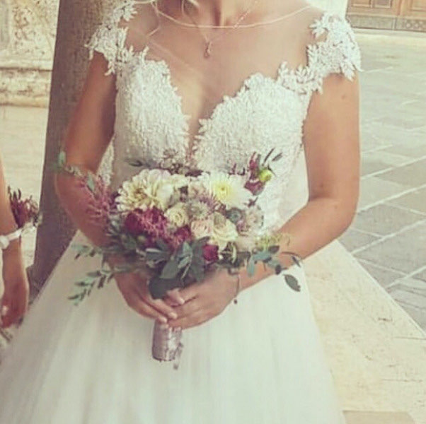
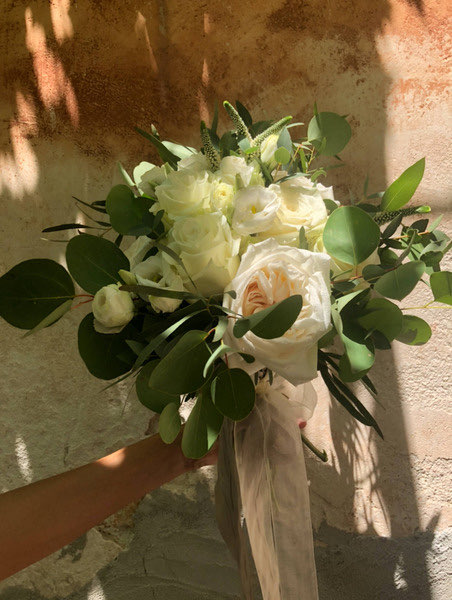

01 · Vjenčani buket
Buket koji nalikuje mladenki
U nizu detalja bez kojih je vjenčanje nezamislivo ističe se buket. Izrađujemo ga u skladu s osobnošću i željama mladenke, a uz njega i revere te ostale cvjetne detalje.
Detalje biramo prema naputcima mladenaca ili, ako tako želite, dopuštamo vlastitoj kreativnosti da dođe do izražaja.
- vjenčani buket
- reveri
- po mjeri mladenke

